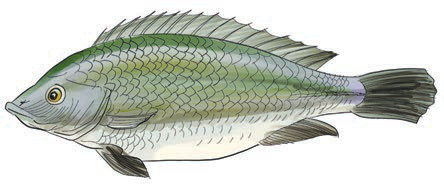
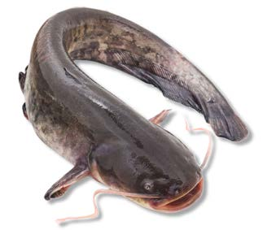

Fish
There are different types of fish and all live in water. Some fish, such as sharks, live in salt water. Others, such as Nile perch and catfish, live in fresh water. Figure 11 shows an examples of fish.


General characteristics of fish
Some fish such as tilapia are covered with scales which overlap facing the tail. Other fish such as catfish and mackerel do not have scales
They reproduce by laying eggs.
They have fins which help them to swim and change direction.
They have streamlined bodies which help them to swim smoothly in water.
The body of a fish is covered with mucus which helps it to protect its body against pathogens.
They use gills for gaseous exchange.